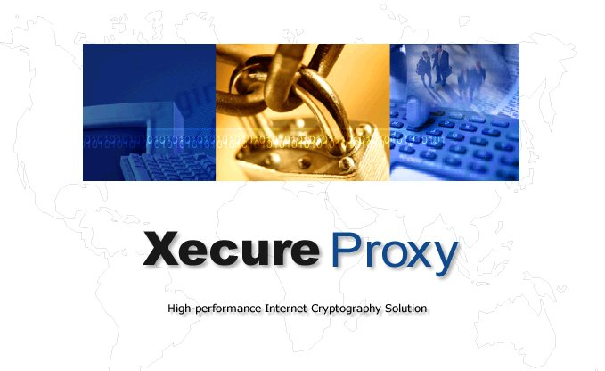

환영합니다.
최상의 암호/인증 보안 솔루션 XecureProxy 를 사용해 주셔서 감사합니다.
본 데모에 처음 접속하신 경우에는 클라이언트 설치 프로그램이 자동으로 다운로드 되어 PC 에 설치됩니다. 잠시만 기다리십시요.
PC 에 설치를 하신후 아래의 demo 를 사용하십시요.
자동 다운로드가 실패할 경우, 아래의 클라이언트 설치 프로그램 페이지로 이동하여 설치프로그램을 받은후 직접 설치하시면 됩니다.
</COMMENT> No XecureWeb 4.0 PlugIn
[익명기반 암호 데모]
[인증서 기반 암호 데모]
SDT Demo (서버대 서버)
proxy_request.html
[클라이언트 설치 프로그램]
[XecureProxy 메뉴얼 보기]